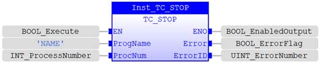
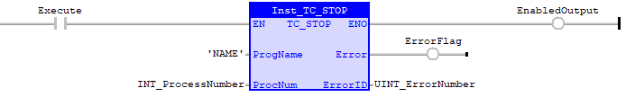

Program Function.
Stop a program or IEC 61131-3 Task with the given name and optional PROCESS number in the multi-tasking system.
|
Execute : BOOL; |
Rising edge requests execution |
|
ProgramName : STRING; |
Name of the BASIC program or IEC Task to stop |
|
ProcNumber : USINT; |
Process number that the program is running on, or -1 to stop all programs/tasks with the given name. -1 should be used if the process number is not known. |
|
Done : BOOL; |
TRUE when function has completed normally |
|
Error : BOOL; |
TRUE if a program error is detected |
|
ErrorID : UINT; |
Returned error number |
When the Execute input changes from FALSE to TRUE (rising edge), the function block issues the STOP command for execution in the multi-tasking OS. The value in ProcNumber will allow a single instance of the program to be stopped. If there is only one instance of the program or the process number is not known, then Process Number -1 will stop all instances of the program.
A programming error will set the Error output and return an error ID number. For the Error ID reference, see the Trio Programming error list.
Inst_TC_Stop(Execute, ProgramName, ProcNumber);
Done := Inst_TC_Stop.Done;
Error := Inst_TC_Stop.Error;
ErrorID := Inst_TC_Stop.ErrorID;

